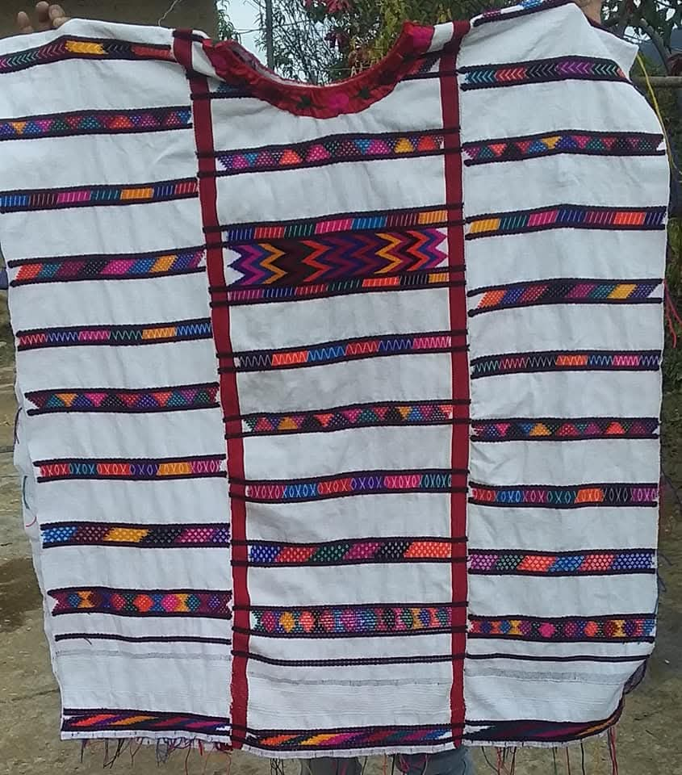
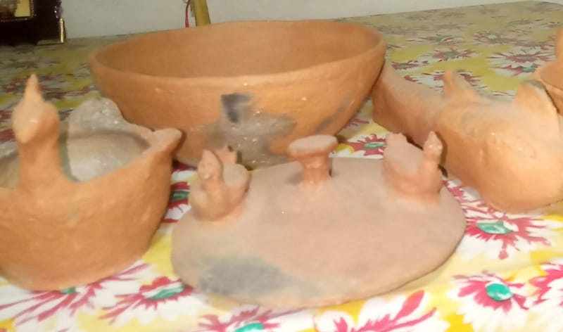
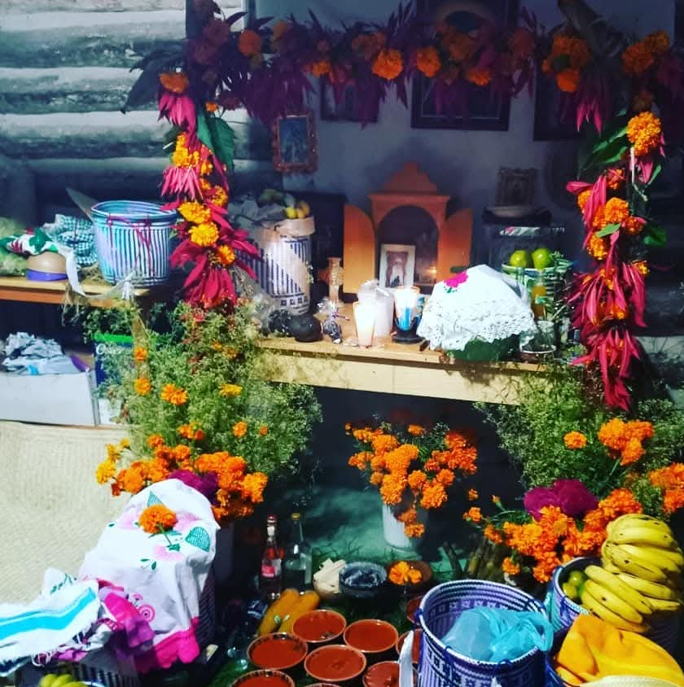

SHINA ÑÚ
KUENTU NU ÑU
A KA NÚ
NU IXHO ÑU
XHOO KAA |
|

|
KUNU ISA
Ixho nta ña'a a kasa'a xiyoo, xiki , pañuu i xkemaa, ka kuatiñu ntaa isa, mita khi ntu kasa'agaña nu xtikakhi, ka jatiñu xhuvá de kasaña a ku'uxho. |
ÑAYI SA'A KIISI, KO'O
Xha ixo nta tee a kasade nta kiisi, tija'a, ko'o, ñaji, mita khi ntu ixo a kua teé a kasade a kuatiñuxo, nta sukhi va kuanu mita ntu kasagade kuenta a kutúvai kasai nta kiisi y na guaku jatiñuxo nu ñu'u. |
 |
 |
ANTUNI VE ÑU'U
Nu ñuya ixo u Ve Ñu'u, i nu iyo nta a nani kua'a, de inka a nani católicos, nta kua'a ntu sa creer nu takhi yuku, ni antaki anu, de nta católicos sa creeir nu ma santu i akua'a maya, Kasai viko anu, viko Isidru de nu maya. |
|